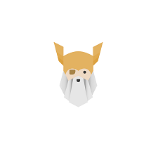

Zielstrebend
In der Schule lernt man nicht viel über die Programmierumgebung selbst(wie zB. Ubuntu). Um sich darin zurecht zufinden, passt "The Odin Project" hervorragend als Lernunterstützung. "The Odin Project" ist ein Online Learning Plattform die von null anfängt. Dieser beginnt mit dem Umgehen im Betriebssystem Xubuntu und folgt mit diversen Projekten, bei dem man HTML, CSS und Javascript anwendet.
Einige Projekte finden sie in meinen GitHub repositories.